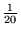
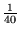
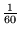

Appending the small file to the larger one and then sorting will take about c1(N + M)lg(N + M) seconds; if N is much larger than M, then this will be about c1N lg N seconds.
Sorting the small file first and then merging the two ordered files will take about c1M lg M + c2(N + M) seconds. Again, if N is much larger than M, then this will be about c1M lg M + c2N; without knowing more about the values of M and N, we can't say whether c1M lg M or c2N will be dominant.
The ratio of the running times will therefore be about
We may make the following table of this ratio, using the approximation lg 103 = 10:
| M | N = 103 | N = 106 | N = 109 |
| 1 | 10 | 20 | 30 |
| 4 | 10 | 20 | 30 |
| 16 | 9 | 20 | 30 |
| 64 | 7 | 20 | 30 |
| 256 | 3 | 20 | 30 |
| 1K | 20 | 30 | |
| 4K | 19 | 30 | |
| 16K | 16 | 30 | |
| 64K | 10 | 30 | |
| 256K | 4 | 30 | |
| 1M | 29 | ||
| 4M | 28 | ||
| 16M | 21 | ||
| 64M | 11 | ||
| 256M | 4 |
Let us see how many times faster even the O(N lg N) sort is than insertion sort (so the merge-based algorithm would be even better). The ratio we are interested in is
When N = 103, this becomes M, so insertion sort will be slowest for any M > 20. For M 20, insertion will be faster than resorting, but in this range, the merge method is faster than resorting by a factor of 10, so insertion only wins when M = 1 or 2.
When N = 106, the ratio becomes M, so insertion sort will be slowest for any M > 40. For M 40, insertion will beat resorting, but now the merge is better by a factor of 20, so again insertion is only a win for M = 1 or 2.
Finally, when N = 109, the ratio is M; just as above, insertion is slowest for M > 60 and resorting is slowest for M 60. Merge is better than resorting by a factor of 30 when M is very small, so it will be better than insertion again for any M > 2.
It is reasonable that the break-even point between insertion and merge is at about M = 2, independent of N, since insertion makes one pass through (roughly half of) the large file for each of the M items, while merge can do the entire job in one pass (assuming the time to sort the M items is negligible).
Recall that Program 8.2 first arranges the keys in a bitonic sequence, by copying the second subfile in reverse order after the first, so that the merge can be performed without sentinals or end-of-file tests.
Suppose that the largest value in the first array is equal to both of the last two elements of the second array. When the second array is reversed, this will produce three adjacent equal elements in the middle of the combined array. Program 8.2 will move all three of these elements back into the merged array in order from left to right; this will have the effect of reversing the previous order of the two equal elements from the end of the second array. Here is an example:
One way to fix this is to change the test in the
inner loop to if (aux[j] < aux[i] || i > m); this will force the
elements from the second half to be copied using j instead of
i. This still slows down the inner loop, so an even better
solution is to realize that we can avoid copying the problem elements in
the first place--if the largest elements of the second array are (at
least) as large as the largest element of the first, then they can stay
right where they are and not participate in the merge. For symmetry, we
can do the same with the smallest elements of the first array. Here is the
code:
template <class Item>
void merge(Item a[], int l, int m, int r) {
int i, j;
static Item aux[maxN];
while (r > m && a[r] >= a[m]) r--;
while (l <= m && a[l] <= a[m+1]) l++;
for (i = m+1; i > l; i--) aux[i-1] = a[i-1];
for (j = m; j < r; j++) aux[r+m-j] = a[j+1];
for (int k = l; k <= r; k++)
if (aux[j] < aux[i]) a[k] = aux[j--]; else a[k] = aux[i++];
}
Note that the merge in the last step is just the one that was performed in Exercise 8.5.
The sequence will be R R P O T Y I I U Q E U. The E that was inserted at the end will be the only item remaining in the queue.
The sequence P R I O * will return R, leaving a priority queue containing P, I, and O.
The sequence R * I T * Y * will return R T Y, leaving a priority queue containing I.
Joining these two queues and removing three maximum elements will return P O I and leave a queue containing I.
The sequence Q U E * * * U * E will return U Q E U and leave a priority queue containing E.
Finally, joining these last two queues will produce a priority queue containing I and E.
In a stack, the most recently inserted item will be the first to be removed. Therefore, to implement this with a priority queue, we just need to make sure that more recently inserted elements have higher priorities than older elements. This is easy to arrange; just assign priority 1 to the first item inserted, then priority 2 to the next, etc.
In a queue, the oldest item will be the first to be removed. We may implement this as above for the stack ADT, except the priorities of successive insertions need to be smaller. For example, we could give the first item a priority of -1, then priority -2 for the second, etc.
This would be fine if all we ever wanted to do was find the maximum value; of course, if that were all we needed, then we wouldn't have to save any of the other values at all.
If we also want to be removing items, then when the current maximum value is removed, we will need to examine all of the remaining items to determine the largest remaining value; therefore, while insert and find the maximum will take constant time, remove and remove the maximum will both take linear time. This is almost the same behavior as using an unordered collection (array or linked list), except the running times of remove and find the maximum have been swapped.